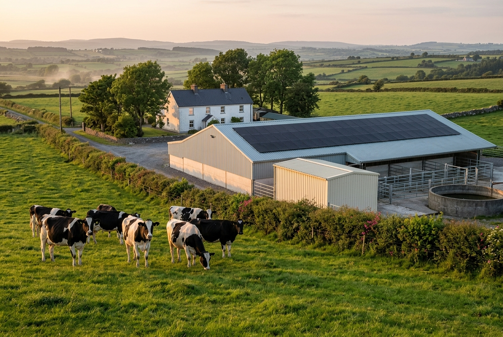

We model your real half-hourly load, the cooling spike at milking, the water heater in the afternoon, against four candidate system sizes. TAMS 3 grant priced in correctly, not assumed. The payback year you can take to the co-op, the bank, or your accountant.
Independent. · €395 all-in. · Signed off by a chartered engineer.
The dairy load has two of its three peaks during PV generating hours. The third (evening milking) is when the export tariff matters. We size for both.
The installer's quote came in at €74,000 for a 64 kWp roof array, claimed payback at year 4.2, assumed 92% self-consumption. We modelled the actual half-hourly data. Self-consumption ran at 62%. The honest payback was year 5.4 at 52 kWp, sized to the TAMS 3 ceiling.
The farmer signed at 52 kWp. He kept the €22,000 he would have spent over-sizing into a slurry tank upgrade. The bank accepted our report as the appraisal document.
Get the same on your farm
M. O'Sullivan, dairy farmer, mid-Cork. Photographed with permission, May 2025.
Useful for a back-of-envelope sense check. The real number depends on your milking schedule, your plate cooler condition, and whether you're heating water with oil or electricity. We validate against your actual half-hourly data, every time.
Indicative figures only. We will publish the real number for your site within 24 hours of receiving your half-hourly data.
TAMS 3 (the Targeted Agricultural Modernisation Scheme, third tranche, run by DAFM) covers solar PV on registered dairy holdings. Grant rate is 60% of eligible spend on the dairy enterprise's electrical investment, subject to your remaining TAMS investment ceiling.
Three things move the cash impact on your farm: where you are in your TAMS ceiling, whether your herd number is on the latest BPS return, and whether the PV is sized for the dairy enterprise alone or the wider holding.
Of eligible solar PV spend on the dairy enterprise.
Per dairy holding, applies across the TAMS 3 scheme period.
Batteries are eligible under specific conditions. We confirm before quoting.
Every euro over the cap is unsupported and stretches payback by 12 to 18 months.
Figures correct as of the latest DAFM TAMS 3 specifications. We re-verify on every report.
We model three mounting scenarios as standard, and we flag the structural questions before you commit. The most common ones we see in the field:
Still common on Irish dairy holdings. PV cannot be fixed directly to friable asbestos. We model the cost of an over-roof or a strip-and-resheet so the number you see is the all-in number.
Below 10° you lose generation and gain soiling. We adjust the kWh yield in the model and recommend ballasted or modified mounting where it makes sense.
Often the cheapest path to system size when the dairy yard roof is too small. We check planning thresholds and ground conditions against your county council's current guidance.
Often the highest NPV configuration for herds above 180 cows. We size the split to match midday demand and the TAMS 3 ceiling.
No site visit at this stage. The half-hourly meter data and a satellite read of your yard are enough to give you a number you can act on.
We request the half-hourly data from ESB Networks on your behalf. Two minutes of your time.
Roof, ground, mixed. TAMS 3 priced in. Battery scenario only if your evening milking load warrants it.
Bring it to your installer. Bring it to your co-op advisor. Bring it to AIB or Bank of Ireland. The number is yours.
We'll come back within one working day with a quote (€395 unless your holding is unusually complex) and the ESB Networks data request you'll need to forward.
Yes, up to the dairy enterprise investment ceiling of €90,000 within the TAMS 3 reference period, and only on eligible spend. If you've already drawn TAMS on a milking robot or a slurry store, your remaining headroom may be lower. We check this against your DAFM ID before we model so the number isn't a surprise.
Often both of us, on different inputs. Installers typically assume 90%+ self-consumption. Real Irish dairies with a single milking parlour run closer to 60 to 70%. Past the TAMS 3 ceiling, every extra kWp costs you €1,000+ unsupported and only earns you the export tariff, which fell sharply in 2025. We're happy to get on a call with your installer and walk through which assumption is doing the work.
We model two scenarios. One with strip-and-resheet costed in (the structurally correct option). One with a steel over-roof (cheaper, mid-life solution). We do not recommend bolting through asbestos. If both numbers look bad, ground-mount on a corner of rough grazing is usually the answer, and we'll model that too.
Probably not, on a dairy holding. The evening milking peak is too short to amortise a 30 kWh battery against, and the SEM export tariff is currently more attractive than self-consuming through a battery's round-trip efficiency. We do model the battery scenario for every farm with substantial evening load. About 1 in 8 dairies we look at justify one.
€395, refunded if we cannot model your site. Twenty-four hours from data to PDF.